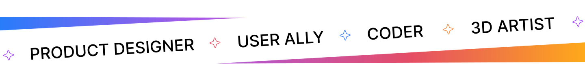
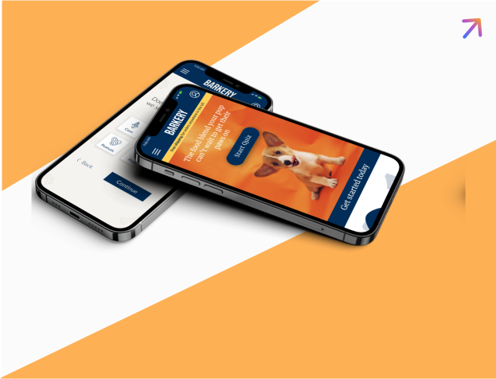
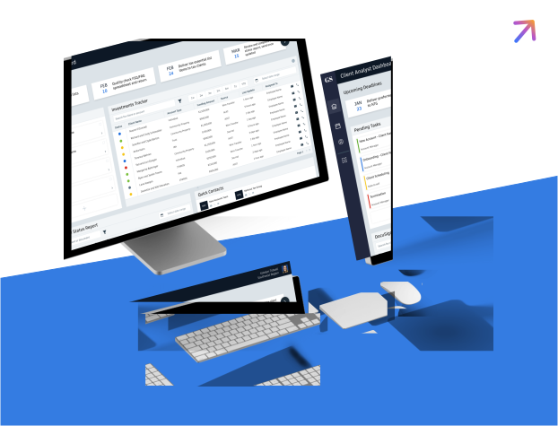
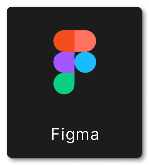
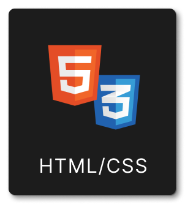
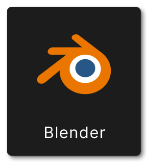
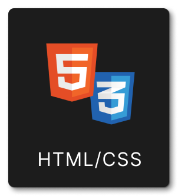
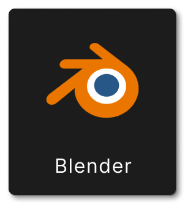
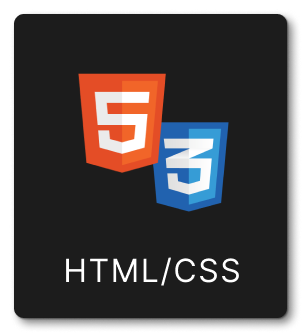
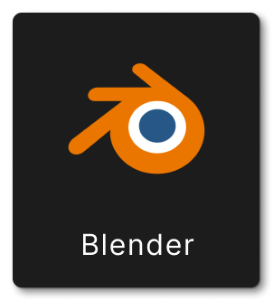

A Product Designer and Visual Developer with experience making web and mobile applications. I specialize in UX/UI Design, Responsive Web Design and Visual Development. In my free time I enjoy testing my creativity through 3D design and rendering!

HIGHLIGHTED PROJECTS
The projects below are derived from market research, usability testing and real user feedback. Each product design was carefully crafted through empathy to create a meaningful experience for the user.
HOMEY CASE STUDY
A detailed step-by-step process of the research and development of an apartment locating app.

BARKERY CASE STUDY
A complete design process for creating a dog food subscription app to provide users with convenience and customization.
BAZAAR - NFT MARKETPLACE
A concept project that not only educates users on the complexities of the NFT space, but also provides a marketplace for creators to sell their work.

ANALYST DASHBOARD
Using an existing design system, I designed a dashboard that would allow increased visibility of tasks and projects for analyst within my division at Goldman Sachs.
MY SKILLSET
These are just a few of my favorite tools to use daily. I enjoy working in Figma, but also have experience in Adobe XD. For animations and 3D tools, my go-to at the moment is Blender (I plan to expand to After Effects as well). I’ve also began coding some side projects to better understand the framework and how to hand off to engineering!



DISCOVER WHAT IMPACT OF PUTTING THE USER AT THE FOREFRONT CAN DO & PRODUCE.


 


